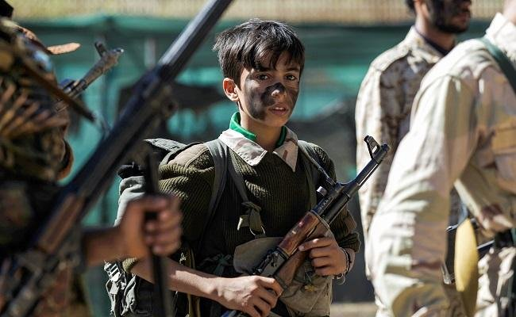

Yemeni Minister Condemns Houthi Militias for Recruiting Children

The Minister of Information in the Yemeni government, Muammar Al-Iryani, denounced the Houthi militias for recruiting children and pushing them to the front lines, saying that the militia’s approach coincides with Iran’s behavior.The minister’s statements came at a time when the Yemeni parties supporting the legitimacy of the government expressed surprise at the calls of the UN envoy Martin Griffiths to hold new consultations with the Houthi militias before implementing the Stockholm Agreement.
Al-Iryani said in a series of tweets that the Houthis’ approach is reminiscent of Iran’s exploitation of children as war fuel during the first Gulf War.They too recruited terrorist organizations to children as tools to threaten international peace and security.He warned that history will record the international community’s betrayal to Yemeni children regarding the Houthis’ crimes against them.
Turning to the methods of the Houthi group in attracting minors, the Yemeni minister said, the 'Houthis’ death journey starts' with 'children taken from classrooms' to be 'brainwashed in so-called ‘cultural courses.''The Houthis then 'indoctrinate them with extremist terrorist ideology,' then 'send them to crematoria to fight Yemenis' in service of the Iranian mullahs.
He pointed out that this journey towards polarization, recruitment, and fighting ends with hundreds of children pictures suspended in the walls after the Houthi militias return them to their families, leaving pain and grief to their mothers and their families.
He renewed his call to Yemeni families in the group’s control areas to spare their children.Al-Iryani’s statements come at a time when the Houthi group’s losses in the battles of Naham, Al-Jawf, Sarwah, and Al-Dhali have been sustained, as in recent weeks hundreds of people were killed, including children.
Meanwhile, the Yemeni parties, under the so-called 'National Alliance,' supporting the legitimate government was surprised by the statements of the Special Envoy of the Secretary-General of the United Nations, Martin Griffiths, calling for unconditional political consultations.
This is despite the state of stumbling in the implementation of the Stockholm Agreement due to the intransigence of the revolutionary militia.In an official statement, the parties called on the UN envoy to work to implement the 'Stockholm Agreement,' as it provides a platform to prepare for comprehensive negotiations with a new methodology that provides conditions for success and makes peace a necessity for all parties.
The party coalition strongly condemned the repeated targeting of civilians, populated areas, and hospitals by the Houthi militias in Al-Dhali, Al-Hodeidah, Taiz, Al-Jawf and Marib.The most recent of these was the bombing of Al-Jafra Hospital in the north of Marib Governorate.They called on the international community and international organizations to criminalize these terrorist practices and stop the ongoing attacks on civilians.
The parties praised the roles of the Yemeni armed forces fighting on various fronts in order to defend the republic, end the coup, restore state institutions, and counter Iranian influence, and praised the great consensus and societal circumvention.
The Yemeni National Alliance called on the government to intensify attention on the fronts, provide the necessary support in support and armament, care for the wounded, families of the dead, and pay the salaries of the soldiers in advance, and other basic requirements for the battle.
The parties also stressed the necessity of strengthening the structure of the army and security and rebuilding them on national and professional bases with professional military and security leaders, known for their competence and integrity, fixing mistakes and imbalances and holding those responsible for the failures that occurred in the past period and doing everything that could overcome shortcomings and develop performance.
The National Alliance parties appreciated the position of the Alliance to Support Legitimacy led by the Kingdom of Saudi Arabia, and the support it provides to the legitimate government in various fields.It stressed that the Yemeni people will not forget these great positions in the battle of the common destiny.
[bsa_pro_ad_space id=4]
Share on Facebook Tweet Follow us
Posted On: 2020-02-10T00:00:00
Posted By: Joyce Davis


Content Date: 2020-02-10
Download Date: 2021-07-08
Document ID: L0C04D8MY